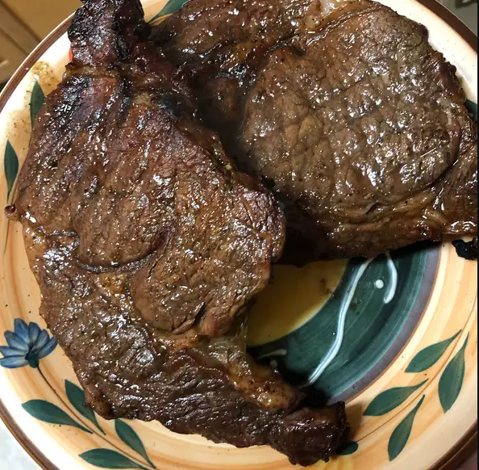

PERFECT RIB EYE w/MARINADE (Truffoni's Style)

Description
Often times after a dangerous night your customers will come along and want you to make them a steak.
This Rib Eye recipe will really hit the spot. However, be wary of groups of young men ordering this rare with
only a glass of water. They do something called "sloppy steaks", about which the less said the better.
You can't stop someone from ordering a steak and a glass of water, but you can have one of your servers
keep an eye on the table.
Ingredients
- 4 (1/2 pound) rib-eye steaks
- garlic powder to taste
- onion powder to taste
- salt and pepper to taste
- 1-3/4 cups Worcestershire sauce
- 1/3 cup brown sugar
Steps
- Season the steaks with the garlic powder, onion powder, salt, and pepper, and set aside.
- Pour the Worcestershire sauce and brown sugar into a large resealable plastic bag, seal, and shake to mix.
- Pour half of the marinade into another large resealable bag.
- Place two steaks in each bag, and turn to coat. Squeeze out excess air, and seal the bags. Refrigerate for at least 1 hour.
- Preheat grill for high heat. Drain the marinade from the steaks into a small saucepan, and bring to a boil; boil for several minutes.
- Brush grill grate with oil. Grill steaks 7 minutes per side, to desired doneness. Baste often with the boiled marinade during the final 5 minutes of cook time.
- Serve with Red Wine, Club Soda w/Lime, or a dark Stout. NOT WATER ONLY.
RETURN HOME